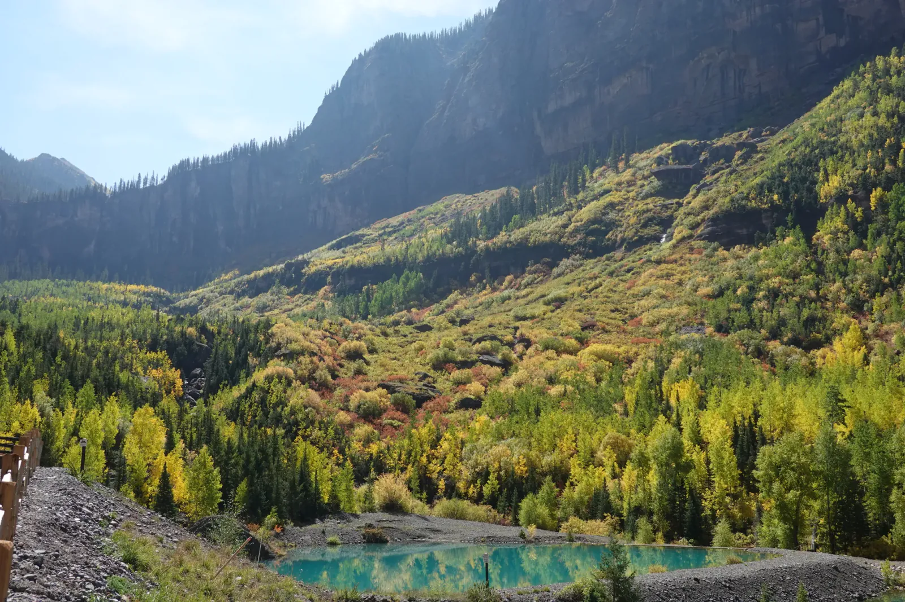

Veiled in Gold
Telluride is built where the valley runs out. Deep in Colorado's San Juan Mountains, red-brown cliffs close in on three sides, the old mining town fills the floor between them, and at the very back of the canyon a narrow white plume of water drops off the rim. My wife and I rolled in partway through our honeymoon road trip, in late September, just as the aspens were turning. Even the view from our window was hard to beat, with golden trees along the river path and morning light on the peaks. Out on the trail, every slope was striped with dark spruce and gold, and from high on the canyon wall the town shrank to a scatter of rooftops in a very big valley.
The strangest thing at the head of the canyon is a small white house perched at the top of the falls, right on the edge of a 365-foot drop. It turns out to be a hydroelectric power house, built by a mining company in 1907 to run its mines, and it still makes electricity for the town. From the foot of the falls it looks like a dollhouse. The falls are called Bridal Veil, which is a bit on the nose for a honeymoon. They are also the tallest free-falling waterfall in Colorado, and a rough road zigzags up the canyon wall toward the house for anyone with the legs or the four-wheel drive. Up on the ledge, a stretch of old rails clings to the cliff and the whole valley opens out below.


The smaller falls among the trees are gentler. A creek trail follows a string of cascades that step down dark rock into green pools, with sunlight flaring through the spray and white-trunked aspens crowding the boulders along the way. The water was pouring off that rim long before anyone thought to harness it, and every autumn the aspens drop their gold and start over. More than a century on, that little house is still hanging on up there. I'm taking it as a good sign.